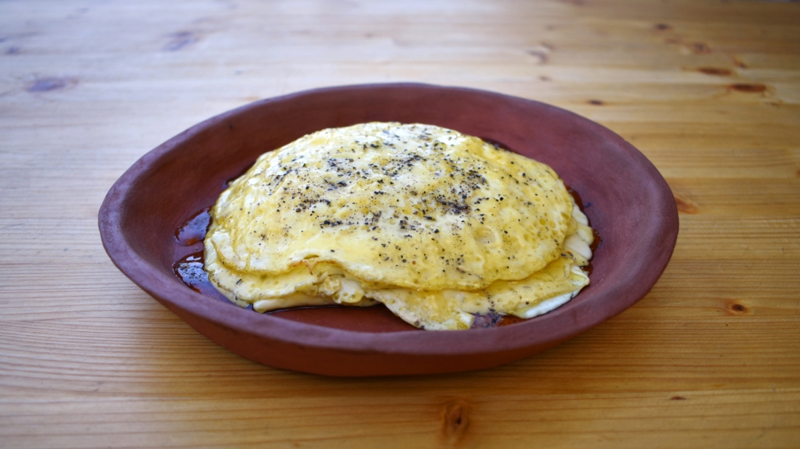

Ova Spongia ex Lacte

The name of the recipe we are preparing today, ova spongia ex lacte, means spongy eggs made with milk.
It is really simple to make, but it is important keeping the ratio (this is one of the few cases in which Apicius
is specific about the quantities) and choosing an excellent honey, the most important ingredient for a good outcome of the recipe.
Ancient Romans, Columella writes, loved in particular savory, thyme, oregano, and rosemary honey.
Reagents:
- 4 eggs
- 250 ml milk
- 25 gr olive oil
- honey
- black pepper
Steps:
- Beat the eggs well and mix with the milk and a bit of olive oil
- Pour olive oil in a pan. When it is hot, add a ladle of the egg mixture. Cook the ova spongia until they are done, without turning them.
- Plate the omelettes coating them with honey and dusting with ground pepper.
Main Page